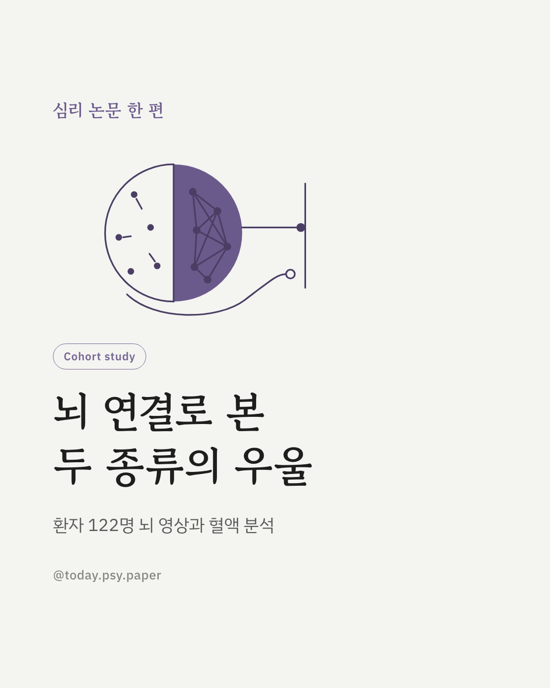
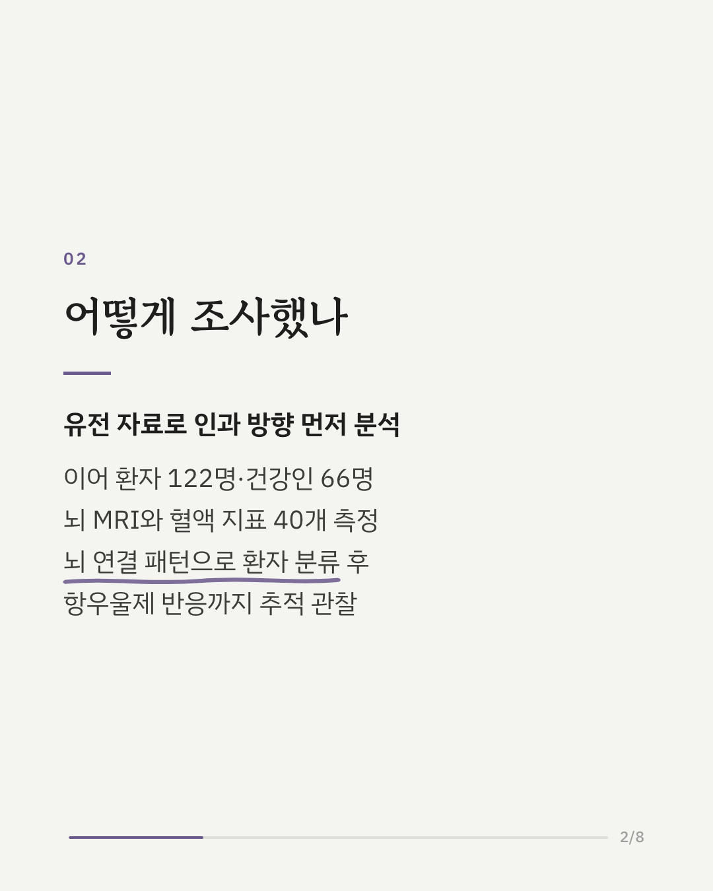
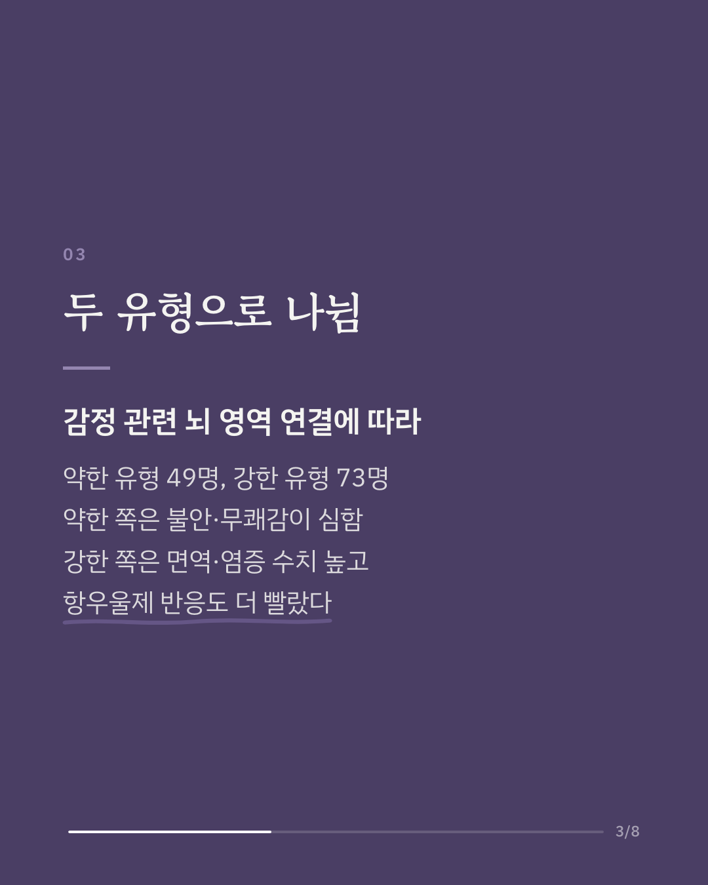
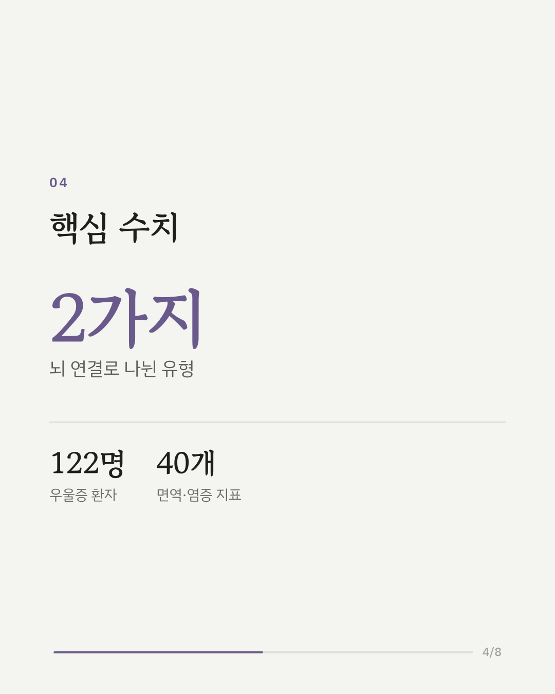
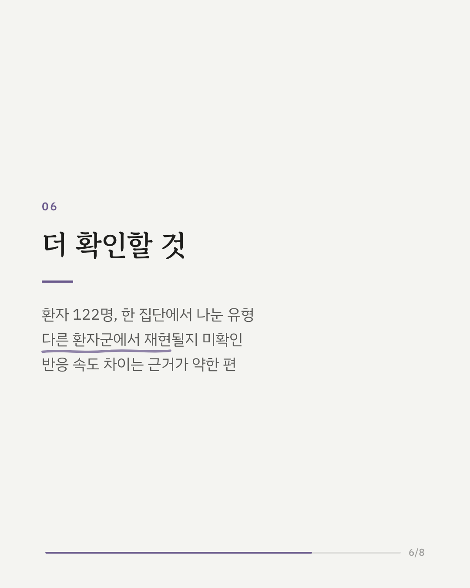
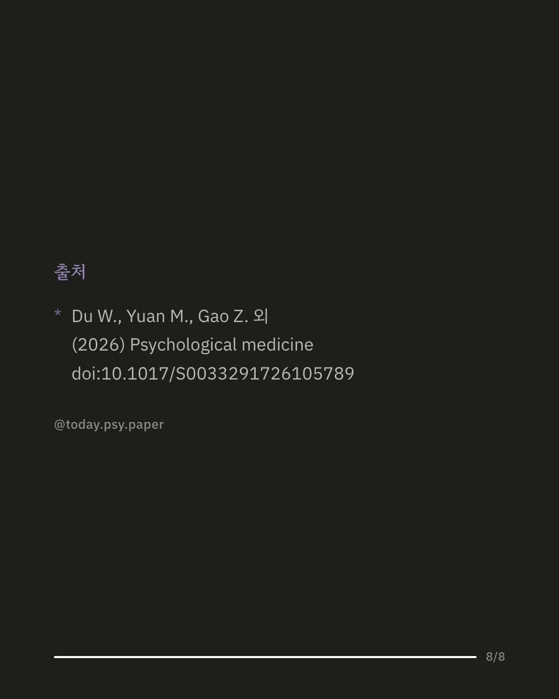

우울증에는 면역·염증 이상과 뇌 구조 변화가 함께 보고돼 왔지만, 둘이 어떻게 얽혀 있는지는 분명하지 않았습니다. 연구진은 대규모 유전 자료를 분석한 뒤, 우울증 환자 122명과 건강한 사람 66명의 뇌 MRI와 혈액 속 면역·염증 지표 40개를 살펴보고 항우울제 반응을 추적 관찰했습니다. 유전 분석에서는 우울증 유전 성향이 성장 관련 호르몬인 IGF-1 수치가 낮은 것과 관련이 있었습니다. 환자들은 감정을 다루는 뇌 영역과 쉴 때 활발해지는 뇌 영역 사이의 연결 양상에 따라 두 유형으로 나뉘었습니다. 연결이 약한 유형(49명)은 불안과 무쾌감(즐거움을 잘 느끼지 못함) 증상이 더 컸고, 연결이 강한 유형(73명)은 면역·염증 수치가 전반적으로 높았으며 항우울제에 더 빨리 반응했습니다. 연구진은 면역과 뇌가 서로 영향을 주고받으며, 뇌 구조로 나눈 유형이 환자를 구분하고 경과를 예측하는 근거가 될 수 있다고 봅니다. 다만 유형은 한 연구 집단의 환자 122명에게서 나눈 것이어서, 다른 환자군에서도 같은 유형이 나타나는지 확인이 필요합니다. 출처: Psychological Medicine (2026), 'Structural network alterations and peripheral immune-inflammatory dysregulation define distinct subtypes of major depressive disorder with prognostic implications' DOI: 10.1017/S0033291726105789 #임상심리 #정신건강정보 #심리학연구 #논문리뷰 #우울증 #항우울제 #뇌과학 #염증
python3 publish.py 42895100